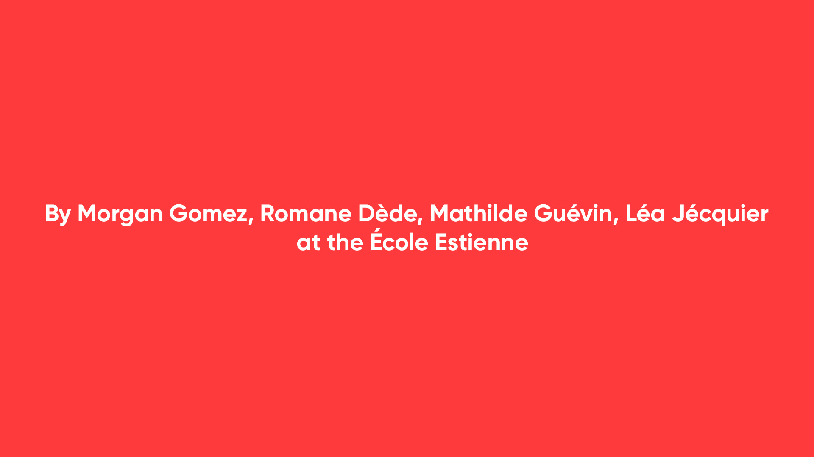
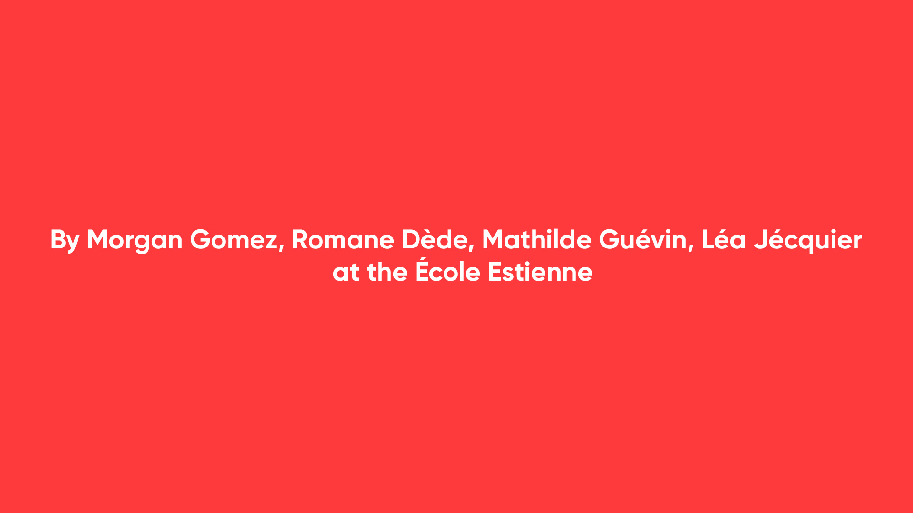

Morgan Gomez
Second Chance
Cumulus Green 2020 Honorable mention
Motion design, packaging, print, UI design
When we first heard of circular economy, and when we had to think about sustainable consumption, we immediately thought of clothes. Indeed, clothes are part of our daily lives, they are essential to us, and we all have clothes in our wardrobes. However, we also know that fashion, particularly the fast-fashion industry is a very low achiever: it ranks as the second most polluting industry in the world. It encourages overproduction, which has a detrimental impact on raw materials, climate change, and biodiversity.
Our research has led us to understand that if we simply wear our clothes a bit longer, we could reduce our waste and slow down our consumption. Our solution is to fall in love again with our old clothes. Let’s be clear about it: saving your clothes and saving your style is saving your planet. To do so, we have to give to the 16-26 year-old (they are very concerned by style) the tools to repair and customize their clothes easily. We also want them to be part of a community because changing together, doing things together is always the most enjoyable. We created Second Chance: a sewing kit and an application with tutorials, inspiration, and a community of sewers, called the needle-mates. More than a sewing kit & an application that brings together all the needle-mates, Second chance is a new hope, a new opportunity offered to fix the mistakes of the past, to give new lease of life to one’s clothing, to one’s planet, as well as to a love relationship that is too quickly abandoned.


 
